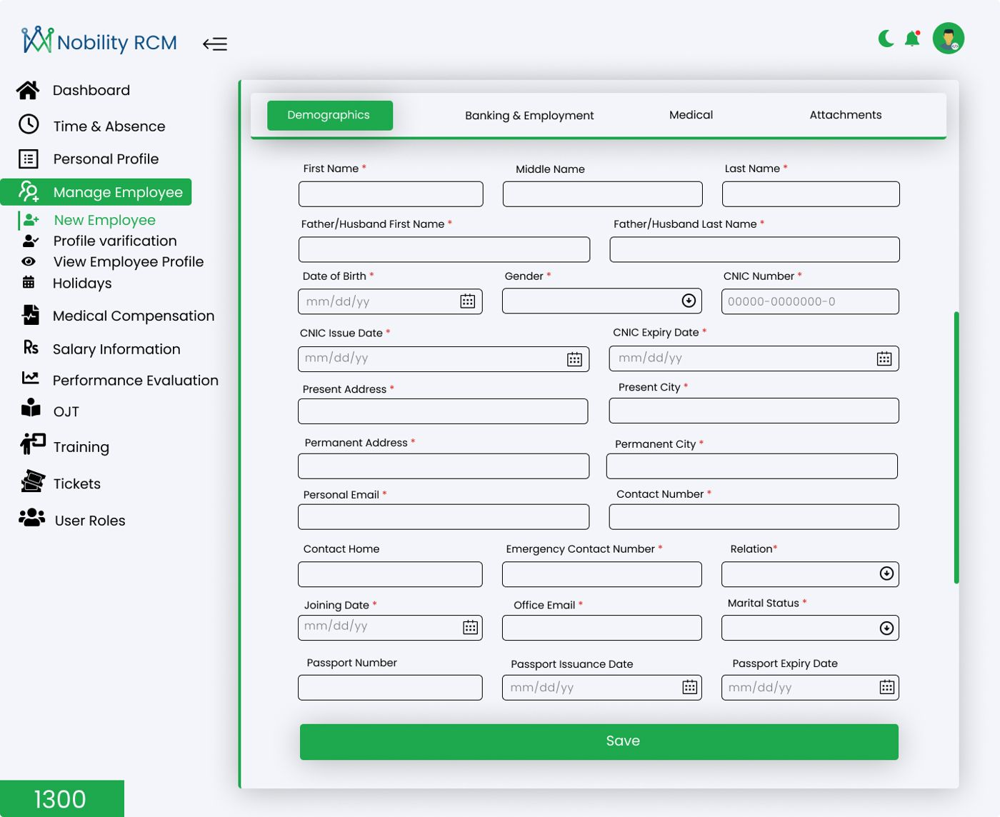
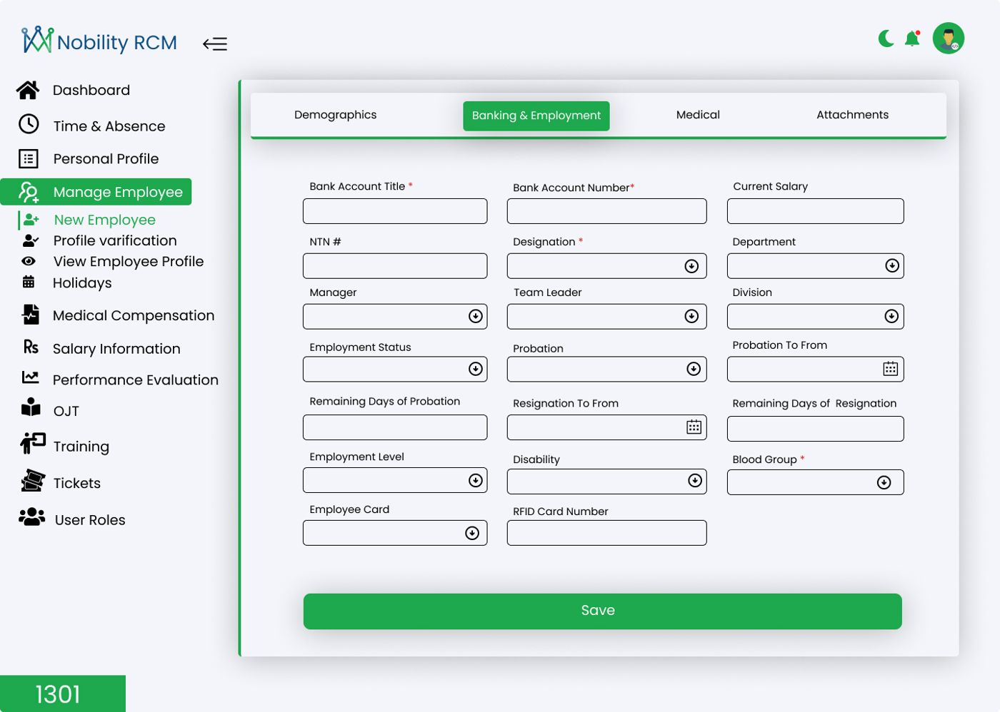
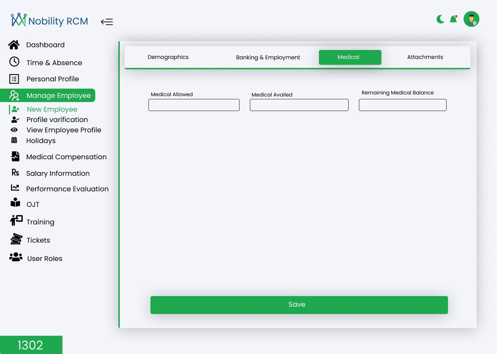
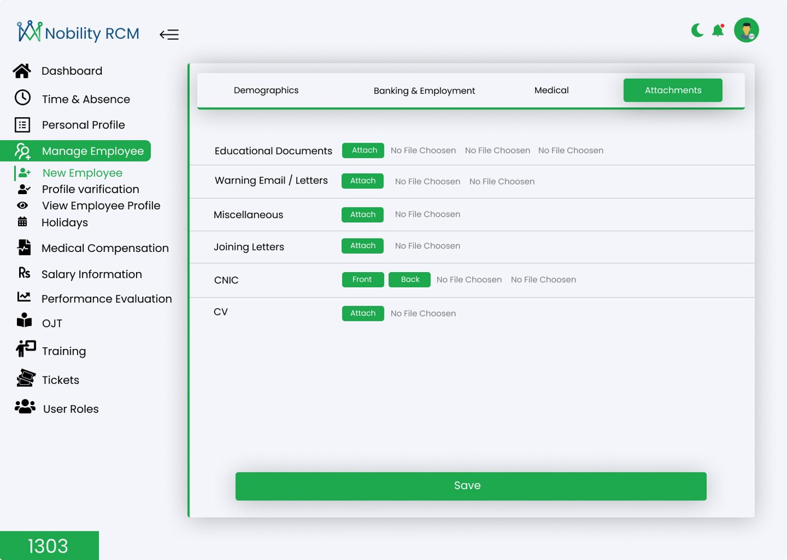
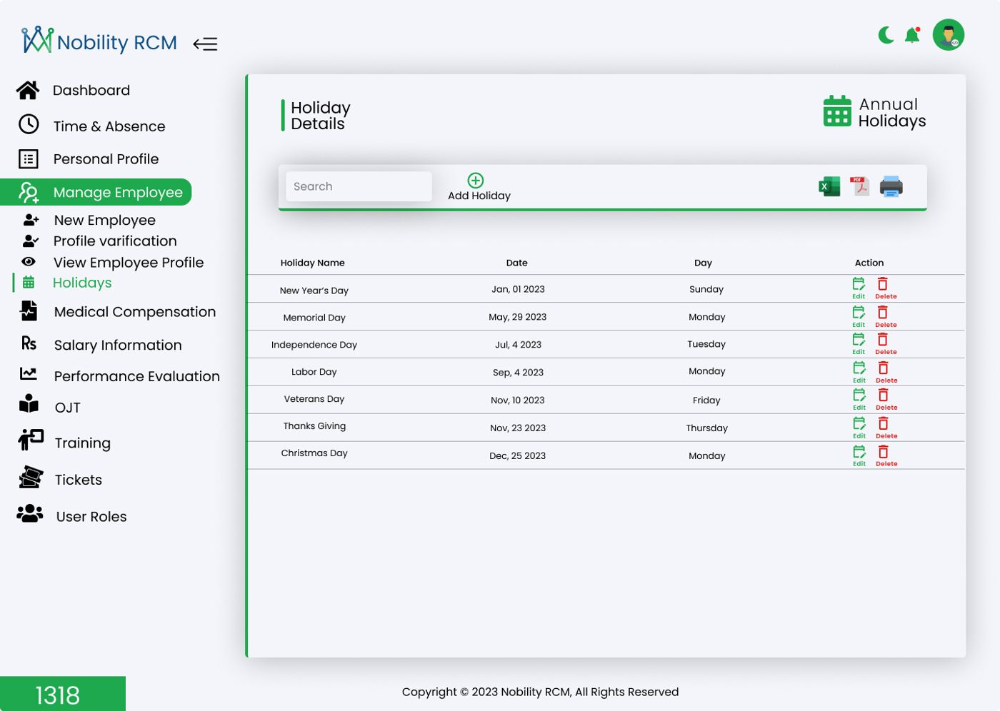
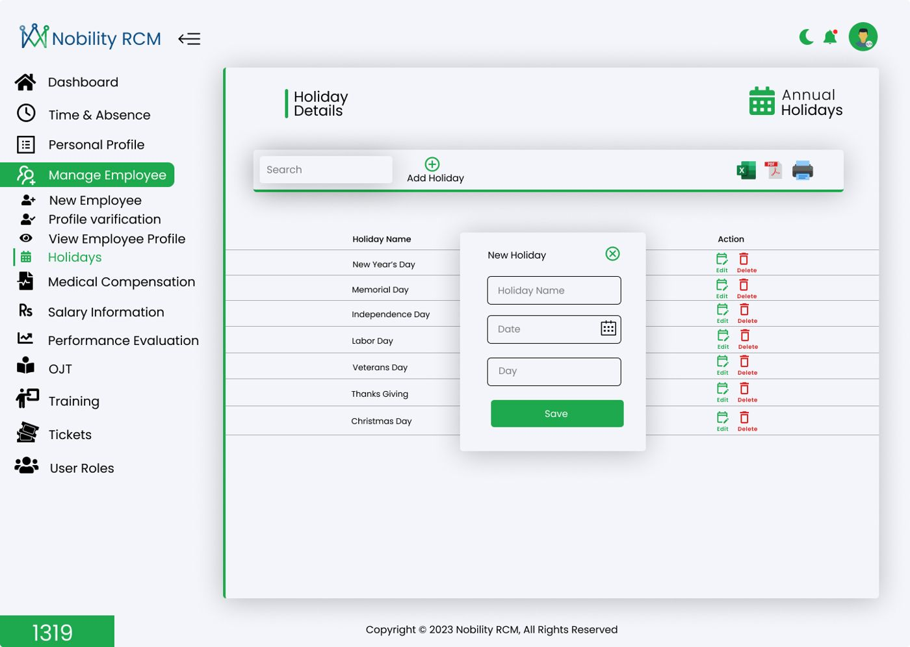
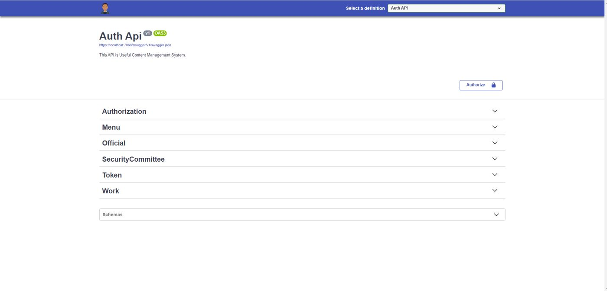
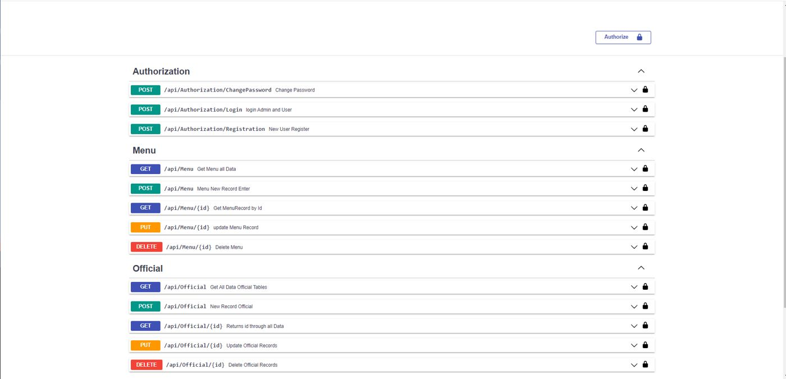
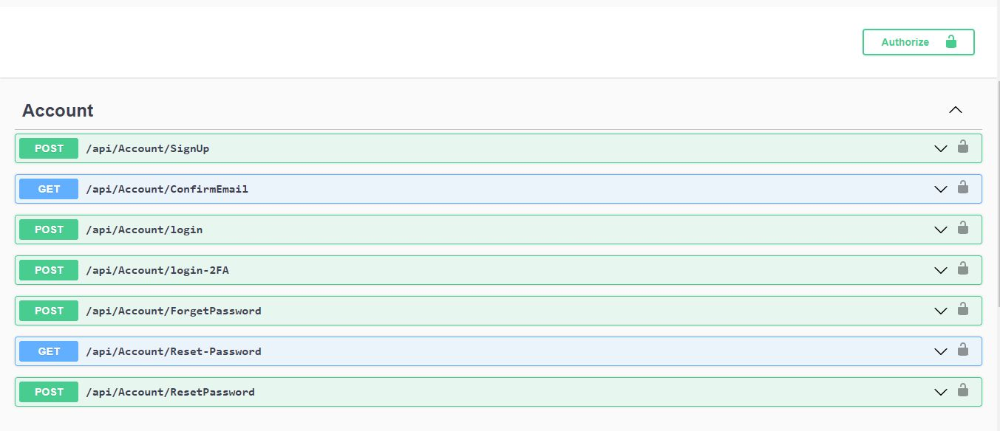

Azure
Cloud services that run in production
- Azure Functions writing inspection data to Cosmos DB
- App Services hosting for APIs and web apps
- Azure AD sign-in with MFA
- Azure SQL and Cosmos DB data stores
- Azure DevOps, CI/CD pipelines, Docker
Open to remote roles in Europe, the UK, Asia and the US
4+ years designing REST APIs with Clean Architecture, Azure Functions with Cosmos DB, and Windows apps that keep working offline. I have load-tested, profiled and tuned production systems, and I write code that the next developer can read.
The four areas I am strongest in, and what I have built with each.
Cloud services that run in production
APIs and back ends, built to last
WPF apps that work offline
One codebase for mobile and desktop
Screens from the HR portal and CMS API, changing live. Select any picture to open the full project.









How field data travels in the systems I build: a machine works on site, the app records it, the API stores it and the team sees it in reports. This is an original illustration, not a real customer system.
Technicians record inspections and job progress in Windows and Android apps, right next to the machine.
With no signal, data is saved on the device and syncs by itself when the connection returns.
Clean Architecture API with Azure AD sign-in and MFA, validation and logging with Application Insights.
Azure Functions update Cosmos DB. 15+ reports export to PDF and CSV and arrive by email.
Three real kinds of problems from my work on field-service, mining and HR software, shown as before and after. Illustrations are simplified and contain no client data.
Technicians inspect machines where there is no network. I built offline-to-online sync so work is saved on the device and sent to the API and Azure Functions when the connection returns.
Slow APIs and SQL queries held up 15+ enterprise reports. I load-tested with Apache JMeter, profiled with dotTrace, tuned the queries and reduced memory use, then added PDF, CSV and email delivery.
For an HR portal I built the ASP.NET Core API and Angular modules so each request follows one clear path with a visible status, instead of scattered emails.
I built an AI assistant that guides technicians, supervisors and new developers through the platform, step by step, in English and German, inside the web, Windows and Android apps.
Online, offline, batch and console apps each needed email. I built one generic notification service that all of them call, so behaviour is consistent and easy to change.
Project details are kept at the level my employer allows. I am happy to go deeper in an interview.
A self-initiated chatbot that guides technicians, supervisors and new developers through a large field-service platform. It explains modules, walks users through tasks step by step, interprets errors and helps with ticket creation, in English and German.
A secure, scalable API I built from scratch for safety inspections. Field apps keep working without a connection and sync when they are back online. An Azure Function pushes inspection updates into Cosmos DB, and a shared email service covers online, offline and batch workflows.
Designed and delivered 15+ enterprise reports with PDF and CSV export and email delivery. Slow endpoints and SQL queries were load-tested with Apache JMeter, profiled with dotTrace and fixed with query tuning and memory work (Span, StringBuilder, streams).
Built the base of a WPF desktop application: Azure AD authentication with MFA, real-time and offline-to-online sync, theme management and installer packages. Also worked with WebView2 and Flutter for Windows and mobile clients.
Built HR portal modules with ASP.NET Core and Angular, plus a content management back end exposed through REST APIs. Used Entity Framework Core and LINQ to keep data access fast and readable.
Promoted through three levels, now owning architecture on an enterprise field-service platform.
C#, ASP.NET Core 6/8, Web API, MVC, Entity Framework Core, LINQ, REST, Identity
Clean Architecture, CQRS, MediatR, microservices, micro-frontends, N-tier
Azure Functions, App Services, Azure AD, Cosmos DB, Azure SQL, Azure DevOps, Docker, CI/CD, Linux and Windows
WPF, WebView2, Flutter (mobile and Windows desktop), Android (legacy), offline sync, installers
JavaScript, jQuery, HTML, CSS, Angular, React (exposure)
Azure OpenAI, GPT integration, chatbot design, grounding on documentation
Apache JMeter, dotTrace, Postman, Application Insights, NLog, GitHub, Scrum
Each bar is a 9:00 to 18:00 workday in that city, drawn on my clock (Pakistan time, 00 to 23). I can shift my hours to overlap with your team. Winter times shown; European summer time moves bars by one hour.
Pakistan time (PKT) is UTC+5.
University of Sargodha
Information Technology, 2022
Send the role or project in two or three lines. I reply within one working day.